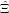
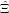
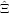
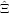
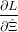
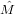
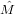

![( i ) ( i) ( i)
vi = ln -[U-] , wi = ln -[Th-] , xi = ln [Sm-]
[Hei] [Hei] [Hei]](MLEpaper318x.png)
U, Th and He form a ternary system, can be plotted on a ternary diagram, and are subject to the peculiar mathematics of the ternary dataspace. The ‘central age’ is calculated from the geometric mean composition of a U-Th-(Sm)-He dataset and is a more accurate estimator of the true age than the arithmetic mean (Vermeesch, 2008). This concept can be easily generalised to four dimensions and this section will, therefore, discuss the case of (U-Th-Sm)/He dating. Given n single grain measurements [Ui, Thi, Smi, Hei] (1≤i≤n), the calculation of a central age involves a bijection from the four-dimensional ‘simplex’ to a three-dimensional Euclidean logratio-space (Aitchison, 1986; Vermeesch, 2008):
|
| (8) |
The central age is obtained by calculating the average logratio composition (v, w, x) and converting it to a geometric mean composition using the inverse logratio transformation:
 | (9) |
This result is then plugged into the U-Th-(Sm)-He age equation.
The problem of averaging the compositions is very similar to the problem of averaging the ages discussed in the previous section. Given n logratio measurements Xi and their (co)variances Ei (1 ≤ i ≤ n):
|
| (10) |
our aim is to develop an algorithm to calculate the weighted mean M and its covariance matrix Σ:
|
| (11) |
In principle, the logratio covariances (Ei) could be directly determined from the raw mass spectrometer measurements. In practice, however, they are calculated from the individual concentrations by linear approximation, using Equation 21 of Vermeesch (2008), which assumes that the errors on the individual concentrations are Normal and independently distributed. Rather than propagating the internal and external uncertainties separately, as done by Vermeesch (2008), this section introduces a weighted mean algorithm that considers both factors simultaneously, using a multivariate generalisation of the one-dimensional maximum likelihood algorithm developed in Section 2. First, redefine the MSWD in matrix form:
|
| (12) |
where df = d × (n - 1) is the number of degrees of freedom of the problem, with d = 2 for (U-Th)/He and d = 3 for (U-Th-Sm)/He dating. Note that, because the variability of Sm does not contribute as much to the age dispersion as that of U and Th, it is better to use only the latter two elements for the MSWD calculation. If MSWD ≫ 1, the data are overdispersed and, in analogy with Equation 2, we will assume that the observations come from a multivariate normal distribution of the form
 | (13) |
where M denotes the mean and Ξ is the overdispersion. The log-likelihood is given by:
![n ( )
L = - 1∑ (Xi - Mˆ)′[Ei + Ξˆ]-1(Xi - ˆM )+ ln |Ei + ˆΞ|+ 3 ln(2π)
2 i=1](MLEpaper324x.png) | (14) |
 and  can be found by solving the following system of non-linear equations:
and  can be found by solving the following system of non-linear equations:
 = ∑
i=1n[(Ei + )-1(Xi - = ∑
i=1n[(Ei + )-1(Xi - )] = 0 )] = 0 | (15) | |
 = ∑
i=1n[(Ei +  )-1(Xi - )-1(Xi - )(Xi -)′(Ei + )(Xi -)′(Ei +  )-1 - (Ei + )-1 - (Ei +  )-1] = 0 )-1] = 0 | (16) |
The covariance matrix  of the weighted mean
of the weighted mean  is obtained by inverting the Fisher Information
matrix, i.e. the matrix of the negative expected values of the second derivatives of the log-likelihood
function:
is obtained by inverting the Fisher Information
matrix, i.e. the matrix of the negative expected values of the second derivatives of the log-likelihood
function:
|
| (17) |